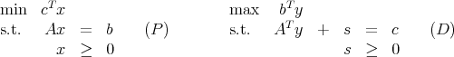
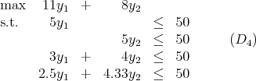
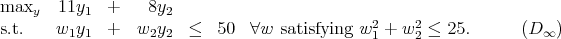
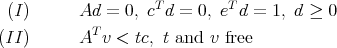
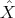
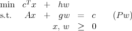

MATP6640/DSES6770
Linear Programming
Spring 2008
Midterm Exam, Thursday, April 3, 2008.
Please do all three problems. Show all work. No books or calculators allowed. You may use any
result from class, the homeworks, or the texts, except where stated. You may use one sheet of
handwritten notes. The exam lasts 110 minutes.
| Q1 | | /40 |
|
|
|
| Q2 | | /30 |
|
|
|
| Q3 | | /30 |
|
|
|
|
|
|
| Total | | /100 |
Throughout, the standard primal-dual LP pair is

where A is m × n and the vectors are dimensioned appropriately.
- (40 points)
- (20 points) Use complementary slackness to show that y = (10, 5) solves the linear
program

(Hint: 2.5 × 10 + 4.33 × 5 = 46.65.)
- (20 points) The problem in part (1a) is a relaxation of the true problem,

Show that y = (10, 5) is not feasible in the true problem. Give a valid linear constraint
that is violated by y = (10, 5) and that could be added to (D4).
(this page intentionally left blank)
(this page intentionally left blank)
- (30 points)
Two systems of equations are:

where e is the n-vector of ones and t is a scalar.
- (10 points) Show that exactly one of the two systems has a solution.
- (10 points) Assume (P) and (D) are both feasible. Show that if (I) is consistent
then (P) has an unbounded set of optimal solutions.
- (10 points) Assume (D) is feasible. Show that if (II) is consistent then (D) has a
strictly feasible solution.
(this page intentionally left blank)
- (30 points)
Let (,ŷ,ŝ) be strictly feasible solutions to (P) and (D). Let = T ŝ∕n. Assume the current
iterate is reasonably well centered, so Ŝe ≈e, with the diagonal matrices and Ŝ defined
in the usual manner. Assume rank(A) = m.
Assume we add an extra variable w to (P), with corresponding column g, giving the
modified problem

where h is a scalar. The point x = , w = 0 is feasible for (Pw) but not strictly feasible. It is
necessary to increase w to get a strictly feasible point.
- (15 points) Ignoring the additional dual constraint gT y ≤ h, how would you try to
find a strictly feasible solution to (Pw) while also keeping XSe ≈e? (Hint: set
up conditions to be satisfied by primal directions (Δx, Δw) and dual directions
(Δy, Δs).)
- (15 points) Now assume you’ve found a strictly feasible primal solution (,) and
a new dual solution with = c - AT > 0. If you could pick the scalar h, how
would you select it? (Aside: an algorithm could work from an incorrect h and
gradually modify it to achieve the correct value.)
(this page intentionally left blank)